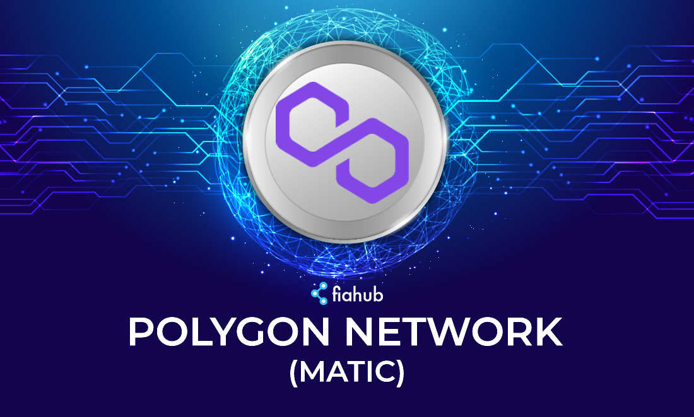
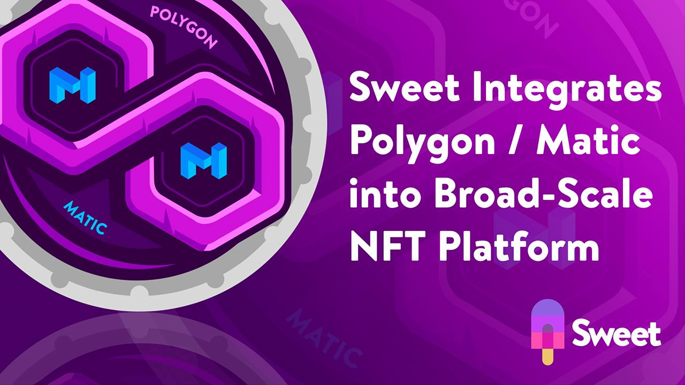
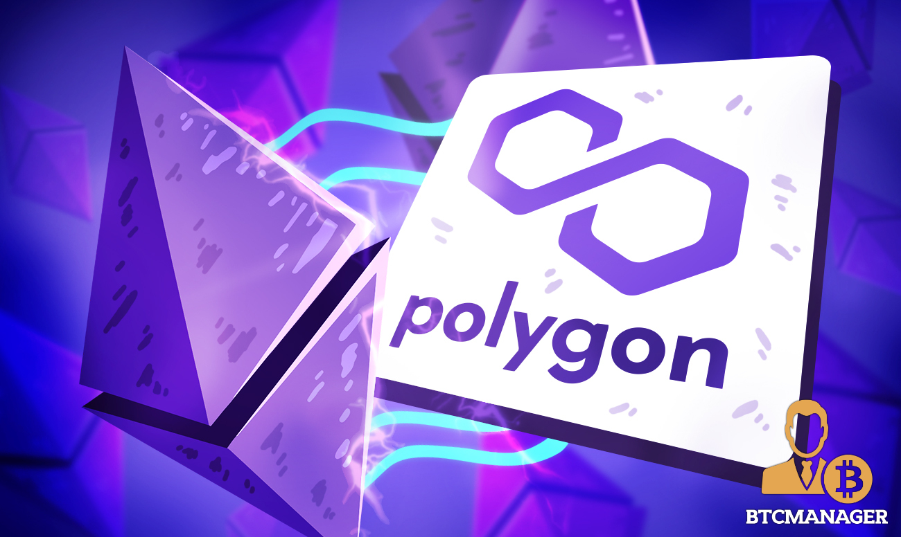
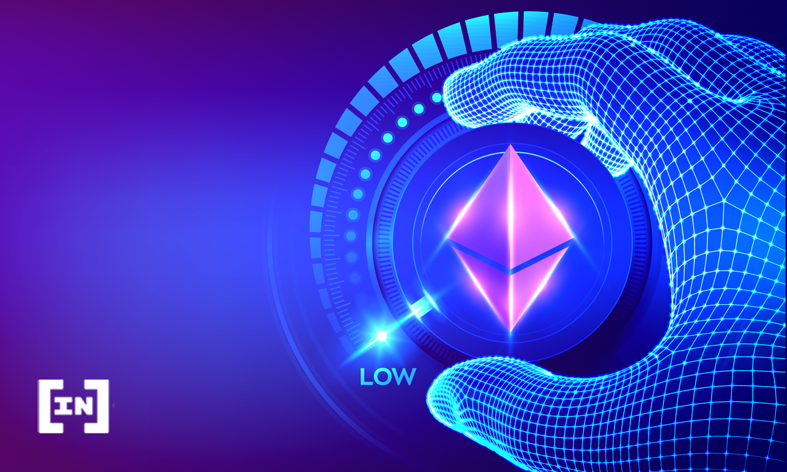
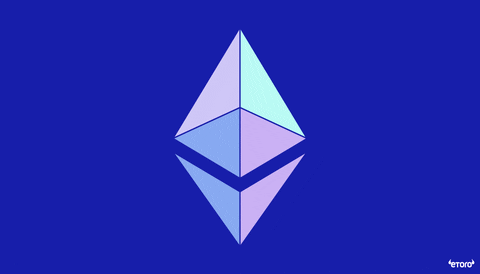

POLYGON(MATIC)
Este es un proyecto que trae la solución a los problemas que se presentan en la red de Ethereum, esto es debido a que Polygon es un proyecto de L2 que corre en la red de Ethreum,el éxito de este radica en Polygon SDK con lo cual se habilita la opción de crear diversas DAaps debido al marco modular y flexible. Por lo cual Polygon aprovecha al máximo la cadena de bloque de Ethereum pero dándole un giro más optimizado donde es más escalable por ende las transacciones son mucho más rápidas .
mas info 
QUICKSAWP (QUICK)
Este es el intercambio descentralizado (DEX) con mayor volumen en la red de Polygon por lo cual es muy probable que su crecimiento sea exponencial. Sabemos el éxito que han tenido los proyectos de DEX en otras redes como Pancakeswap en Binance Smart Chain y Uniswap en Ethereum. Ambos casos mencionados hemos notado como los token nativos han logrado una impresionante revalorización por lo cual deberías considerar el token de Quick en tui portafolio.
mas info 
MUST(MSUT)
Este es la segunda plataforma de intercambio más importante en la red de Matic. Cuenta con una gran variedad de activos criptos y además cuenta con un supply bastante limitado de tan solo 1millon de token lo cual es un bastante reducida en comparación con otros proyectos se este mismo sector del mercado.
En dicha plataforma los usuarios pueden realizar la compra de diversos coleccionables que ucneta con una serie de beneficios y otros NFT mas artísticos. Esta plataforma combina lo que es una Marketplace.
mas info 
AAVE
Este es un protocolo descentralizado con el cual los usuarios pueden obtener préstamos u otorgarles préstamos a otros usuarios de la plataforma. En AAVE los usuarios tendrán la capacidad de recibir intereses por haber otorgado liquidez en un préstamo y para que los usuarios puedan aprovechar de solicitar crédito requieren dejar un activo cripto en garantía. AAVE proporciona a los holder de este proyecto los siguientes beneficios: Descuento en la plataforma.,Gobernanza.
Colateral en prestamos
mas info

CHAILINK(LINK)
Este es el oráculo principal de diversas blockchain y es también el de Polygon. Este proyecto de encarga de suministrar la información del mundo real a la blockchain para que se ejecuten de manera correcta los contratos inteligentes y además las aplicaciones descentralizadas. Este oráculo les da confianza a los inversionistas ya que se caracteriza por prestar un excelente servicio.
Si buscar invertir en un proyecto de oráculo una excelente inversión sería Chainlink debido a que este tiene el potencial de seguir creciendo para los próximos meses .
mas info

EXPANSION DEL ECOSISTEMA
El ecosistema de Polygon se está expandiendo y prueba de esto se puede ver en el aumento de los lanzamientos de protocolos, las migraciones entre cadenas, el lanzamiento de un producto negociado en bolsa (ETP) centrado en Polygon y un aumento constante en la actividad de los usuarios.Uno de los mayores impulsores del precio de MATIC y la actividad en la cadena ha sido la adición de nuevos protocolos a los lanzamientos de proyectos de la red Polygon y las migraciones entre cadenas que comparten la misma tecnologia .
mas info
Ecosistema DeFi de código abierto para Redes Blockchain
En la primera publicación del mes de junio, abordaremos otro Desarrollo de Código Abierto del ámbito DeFi. Específicamente exploraremos y conoceremos lo esencial sobre una interesante y útil Plataforma DeFi, llamada «Polygon», que incorpora un creciente catálogo de aplicaciones abiertas y no abiertas.(tecnologia)
polygon básicamente es un protocolo y un framework de desarrollo utilizado para construir y conectar redes blockchain como ether
mas info

El nuevo Índice del Ecosistema de Polygon (PECO)
El token PECO, que está disponible a través de la plataforma Amun, es un índice de los principales proyectos que se están construyendo en Polygon, una plataforma de escalado de Ethereum que está incorporando a millones de personas a Web3, lo que ofrece a los usuarios una exposición específica a todo el ecosistema de Polygon, en lugar de solo a los proyectos que viven en ambas cadenas.
PECO es el primer token de índice del ecosistema de Polygon.
mas info

Cambio de sushi (SUSHI)
SushiSwap es un creador de mercado automatizado (AMM). Los AMM son intercambios descentralizados que utilizan contratos inteligentes para generar mercados para un par de tokens determinado. Es una bifurcación de Uniswap, el AMM sinónimo de finanzas descentralizadas (DeFi) y el boom resultante en el comercio de monedas DeFi.
Además, SushiSwap quiere ampliar el mercado de AMM e introducir nuevas funciones, que incluyen beneficios mejorados para los usuarios de la red a través de su propio token, SUSHI. ..
mas info
Polygon amplía su presencia a medida que los ecosistemas de juego y NFT
Con énfasis en la simplicidad y la facilidad de uso, Polygon (anteriormente Matic) está diseñado para permitir que las organizaciones y empresas creen e implementen sus propias aplicaciones descentralizadas (dApps ). La plataforma sirve como una solución de escalado de capa 2 que aborda la escalabilidad y el aumento de los costos de gas de Ethereum y otras redes compatibles con EMV.
mas info
El equipo de desarrollo de Polygon también está aprovechando la industria de los NFTs
El equipo de desarrollo de Polygon también está aprovechando los NFT y ecosistemas de juegos de cadena de bloques para expandir aún más su huella de oferta. Como parte de sus esfuerzos para unir Web2 y Web3, Polygon lanzó recientemente Polygon Studios, una nueva iniciativa que se centrará en juegos NFT y blockchain.
mas info

La infraestructura multicadena de Polygon ofrece muchas funciones
La implementación con un solo clic, módulos extendidos para desarrollar redes personalizadas e interoperabilidad con Ethereum y otras cadenas individuales. En 2021, Polygon anunció su intención de aprovechar el crecimiento de las NFT invirtiendo en Colexion, el mercado de NFT más grande de Asia. La plataforma también destacó que financiaría 50 % de todos los costos de desarrollo para proyectos en GameOn..
mas info